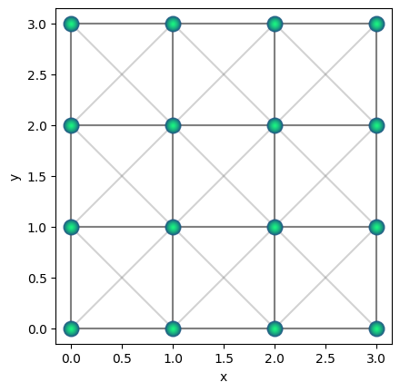
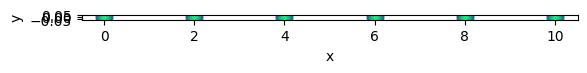
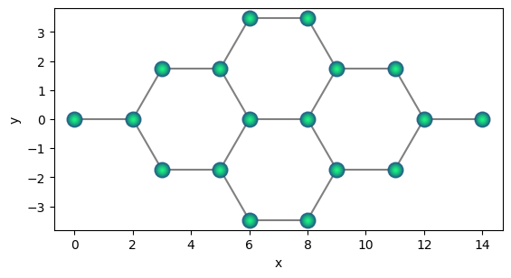
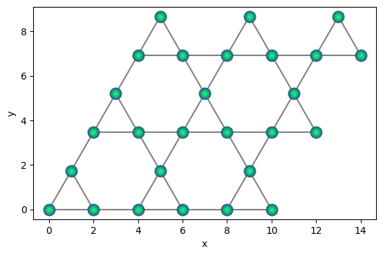
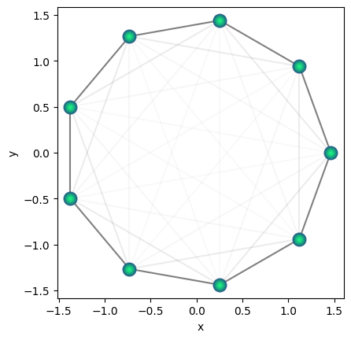
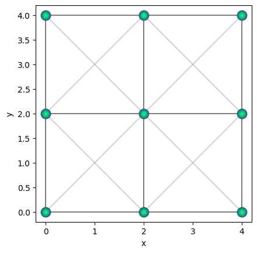
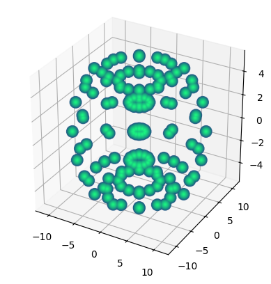
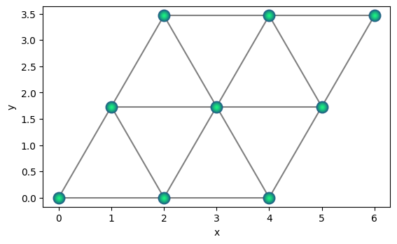

qse.lattices#
A collection of convenience functions for creating common lattices. Qbits class is very flexible to generate arbitrary structures. For convenience, helper functions to generate several common types of lattices is defined here. See the examples below -
import qse
qsqr = qse.lattices.square(
lattice_spacing=1.0,
repeats_x=4, repeats_y=4)
qsqr.draw(radius=2)

Generic Definition#
Any arbitrary periodic structure is defined in terms of two objects, \((i)\) a set of points that are chosen, called basis; and \((ii)\) a set of linearly independent vectors, called primitive lattice vectors, or just lattice vectors, through which we translate the points.
For example, for 2D square lattice, one has just one point at origin \((0, 0)\), and two lattice vectors \({\bf A_1} = (a, 0)\) and \({\bf A_2} = (0, a)\) with \(a\) being the lattice spacing.
Then one translate the points at origin to all passible integer linear combinations \(n_1 {\bf A_1} + n_2 {\bf A_2}\).
Mathematically a lattice is usually infinite, however we usually work with finite repititions, so \(n_1, n_2\) are bounded by the extent or size of the pattern, which in the above example is 4.
In 2D one needs 2 lattice vectors, and in 3D one need 3 lattice vectors. A number of lattices can be generated by just one point, and suitably choosing the lattice vectors.
More complex structure require multiple points to translate to, in order to generate the desired structure.
Functions#
|
Generate a Qbits object in linear chain geometry. This is |
|
Generate a Qbits object in hexagonal lattice geometry. |
|
Generate a Qbits object in kagome lattice geometry. |
|
Generate a Qbits object in a ring geometry. |
|
Generate a Qbits object in square lattice geometry. |
|
Generate a Qbits object in a torus geometry. |
|
Generate a Qbits object in triangular lattice geometry. |
Package Contents#
- qse.lattices.chain(lattice_spacing: float, repeats: int) qse.Qbits[source]#
Generate a Qbits object in linear chain geometry. This is the simplest lattice in one dimension, with equally separated qubits along a line.
- Parameters:
lattice_spacing (float) – The lattice spacing.
repeats (int) – The number of repeats. Must be greater than 1.
- Returns:
Qbits – The Qbits lattice.
Examples
import qse q1d = qse.lattices.chain( lattice_spacing=2.0, repeats=6) q1d.draw()

Note
For a one dimensional lattice, there isn’t really a ‘lattice vector’ as the positions are represented as numbers. The lattice separation \(a\) can be thought of as 1D lattice vector.
- qse.lattices.hexagonal(lattice_spacing: float, repeats_x: int, repeats_y: int) qse.Qbits[source]#
Generate a Qbits object in hexagonal lattice geometry.
- Parameters:
lattice_spacing (float) – The lattice spacing.
repeats_x (int) – The number of repeats in the x direction. Must be greater than 1.
repeats_y (int) – The number of repeats in the y direction. Must be greater than 1.
- Returns:
Qbits – The Qbits lattice.
Examples
import qse qbit = qse.lattices.hexagonal( lattice_spacing=2.0, repeats_x=3, repeats_y=3) qbit.draw(radius=3)

Note
For the hexagonal lattice the unit vectors are
\[A_1 = (\frac 32 a, \frac{\sqrt{3}}{2} a)\quad A_2 = (\frac 32 a, -\frac{\sqrt{3}}{2} a)\]with two basis points at \((0, 0)\) and \((a, 0)\).
- qse.lattices.kagome(lattice_spacing: float, repeats_x: int, repeats_y: int) qse.Qbits[source]#
Generate a Qbits object in kagome lattice geometry.
- Parameters:
lattice_spacing (float) – The lattice spacing.
repeats_x (int) – The number of repeats in the x direction. Must be greater than 1.
repeats_y (int) – The number of repeats in the y direction. Must be greater than 1.
- Returns:
Qbits – The Qbits lattice.
Examples
import qse qbit = qse.lattices.kagome( lattice_spacing=2.0, repeats_x=3, repeats_y=3) qbit.draw(radius=3)

Note
For the kagome lattice the unit vectors are
\[A_1 = (2a, 0)\quad A_2 = (a, \sqrt{3}a)\]with three basis points at
\[(0, 0)\quad (a, 0) \quad (\frac 12 a, \frac{\sqrt{3}}{2}a)\]
- qse.lattices.ring(spacing: float, nqbits: int) qse.Qbits[source]#
Generate a Qbits object in a ring geometry.
- Parameters:
spacing (float) – The spacing between the qubits.
nqbits (int) – Number of qubits on the ring.
- Returns:
Qbits – The Qbits object.
Examples
import qse qbit = qse.lattices.ring( spacing=1.0, nqbits=9) qbit.draw(radius=3)

Note
This can be thought of as 1D chain where you connect the end point and place them on a circular shape.
\(n\) points placed on a circle of radius \(r\) have coordinates \(X_l = (r\cos\theta_l, r\sin\theta_l)\), where \(l\) ranges from 0 to \(n-1\) and \(\theta_l = \frac{2\pi l}{n}\).
If the qubit spacing supplied is \(a\), then we compute the appropriate radius by solving \(a = |X_{l+1} - X_l|\), which gives us the radius \(r\) as
\[r = \frac{a} {\sqrt{2 (1 - \cos{\frac{2\pi}{n}})}}\]
- qse.lattices.square(lattice_spacing: float, repeats_x: int, repeats_y: int) qse.Qbits[source]#
Generate a Qbits object in square lattice geometry.
- Parameters:
lattice_spacing (float) – The lattice spacing.
repeats_x (int) – The number of repeats in the x direction. Must be greater than 1.
repeats_y (int) – The number of repeats in the y direction. Must be greater than 1.
- Returns:
Qbits – The Qbits lattice.
Examples
import qse qbit = qse.lattices.square( lattice_spacing=2.0, repeats_x=3, repeats_y=3) qbit.draw(radius=4)

Note
For the square lattice the unit vectors are
\[A_1 = (a, 0) \quad A_2 = (0, a)\]with the single basis point at origin \((0, 0)\).
- qse.lattices.torus(n_outer: int, n_inner: int, inner_radius: float, outer_radius: float) qse.Qbits[source]#
Generate a Qbits object in a torus geometry.
- Parameters:
n_outer (int) – Number of points in larger (outer) dimension.
n_inner (int) – Number of points in smaller (inner) dimension.
inner_radius (float) – The inner radius.
outer_radius (float) – The outer radius.
- Returns:
Qbits – The Qbits object.
Examples
import qse qbit = qse.lattices.torus( n_outer=12, n_inner=12, inner_radius=5.0, outer_radius=6.0) qbit.draw()

Note
Though its not a commonly explored geometry, it represents the 2D version of a ring, with periodic connection built in.
- qse.lattices.triangular(lattice_spacing: float, repeats_x: int, repeats_y: int) qse.Qbits[source]#
Generate a Qbits object in triangular lattice geometry.
- Parameters:
lattice_spacing (float) – The lattice spacing.
repeats_x (int) – The number of repeats in the x direction. Must be greater than 1.
repeats_y (int) – The number of repeats in the y direction. Must be greater than 1.
- Returns:
Qbits – The Qbits lattice.
Examples
import qse qbit = qse.lattices.triangular( lattice_spacing=2.0, repeats_x=3, repeats_y=3) qbit.draw(radius=3)

Note
For the triangular lattice the unit vectors are
\[A_1 = (a, 0) \quad A_2 = (\frac 12 a,\frac{\sqrt{3}}{2} a)\]with the single basis point at origin \((0, 0)\).